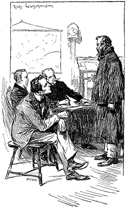
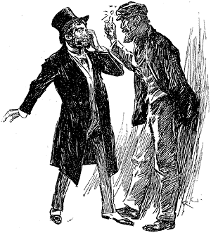

Our prisoner's furious resistance did not apparently indicate any ferocity in his disposition towards ourselves, for on finding himself powerless, he smiled in an affable manner, and expressed his hopes that he had not hurt any of us in the scuffle. "I guess you're going to take me to the police-station," he remarked to Sherlock Holmes. "My cab's at the door. If you'll loose my legs I'll walk down to it. I'm not so light to lift as I used to be."
Gregson and Lestrade exchanged glances, as if they thought this proposition rather a bold one; but Holmes at once took the prisoner at his word, and loosened the towel which we had bound round his ankles. He rose and stretched his legs, as though to assure himself that they were free once more. I remember that I thought to myself, as I eyed him, that I had seldom seen a more powerfully built man; and his dark, sunburnt face bore an expression of determination and energy which was as formidable as his personal strength.
"If there's a vacant place for a chief of the police, I reckon you are the man for it," he said, gazing with undisguised admiration at my fellow-lodger. "The way you kept on my trail was a caution."
"You had better come with me," said Holmes to the two detectives.
"I can drive you," said Lestrade.
"Good! and Gregson can come inside with me. You too, Doctor. You have taken an interest in the case, and may as well stick to us."
I assented gladly, and we all descended together. Our prisoner made no attempt at escape, but stepped calmly into the cab which had been his, and we followed him. Lestrade mounted the box, whipped up the horse, and brought us in a very short time to our destination. We were ushered into a small chamber, where a police inspector noted down our prisoner's name and the names of the men with whose murder he had been charged. The official was a white-faced, unemotional man, who went through his duties in a dull, mechanical way. "The prisoner will be put before the magistrates in the course of the week," he said; "in the meantime, Mr. Jefferson Hope, have you anything that you wish to say? I must warn you that your words will be taken down, and may be used against you."
"I've got a good deal to say," our prisoner said slowly. "I want to tell you gentlemen all about it."
"Hadn't you better reserve that for your trial?" asked the inspector.
"I may never be tried," he answered. "You needn't look startled. It isn't suicide I am thinking of. Are you a doctor?" He turned his fierce dark eyes upon me as he asked this last question.
"Yes, I am," I answered.
"Then put your hand here," he said, with a smile, motioning with his manacled wrist towards his chest.
I did so; and became at once conscious of an extraordinary throbbing and commotion which was going on inside. The walls of his chest seemed to thrill and quiver as a frail building would do inside when some powerful engine was at work. In the silence of the room I could hear a dull humming and buzzing noise which proceeded from the same source.
"Why," I cried, "you have an aortic aneurism!"
"That's what they call it," he said, placidly. "I went to a doctor last week about it, and he told me that it is bound to burst before many days passed. It has been getting worse for years. I got it from over-exposure and under-feeding among the Salt Lake Mountains. I've done my work now, and I don't care how soon I go, but I should like to leave some account of the business behind me. I don't want to be remembered as a common cut-throat."
The inspector and the two detectives had an hurried discussion as to the advisability of allowing him to tell his story.
"Do you consider, Doctor, that there is immediate danger?" the former asked.
"Most certainly there is," I answered.
"In that case it is clearly our duty, in the interests of justice, to take his statement," said the inspector. "You are at liberty, sir, to give your account, which I again warn you will be taken down."
"I'll sit down, with your leave," the prisoner said, suiting the action to the word. "This aneurism of mine makes me easily tired, and the tussle we had half an hour ago has not mended matters. I'm on the brink of the grave, and I am not likely to lie to you. Every word I say is the absolute truth, and how you use it is a matter of no consequence to me."
With these words, Jefferson Hope leaned back in his chair and began the following remarkable statement. He spoke in a calm and methodical manner, as though the events which he narrated were commonplace enough. I can vouch for the accuracy of the subjoined account, for I have had access to Lestrade's note-book, in which the prisoner's words were taken down exactly as they were uttered.
"It don't much matter to you why I hated these men," he said; "it's enough that they were guilty of the death of two human beings—a father and a daughter—and that they had, therefore, forfeited their own lives. After the lapse of time that has passed since their crime, it was impossible for me to secure a conviction against them in any court. I knew of their guilt though, and I determined that I should be judge, jury, and executioner all rolled into one. You'd have done the same, if you have any manhood in you, if you had been in my place.
"That girl that I spoke of was to have married me twenty years ago. She was forced into marrying that same Drebber, and broke her heart over it. I took the marriage ring from her dead finger, and I vowed that his dying eyes should rest upon that very ring, and that his last thoughts should be of the crime for which he was punished. I have carried it about with me, and have followed him and his accomplice over two continents until I caught them. They thought to tire me out, but they could not do it. If I die to-morrow, as is likely enough, I die knowing that my work in this world is done, and well done. They have perished, and by my hand. There is nothing left for me to hope for, or to desire.
"They were rich and I was poor, so that it was no easy matter for me to follow them. When I got to London my pocket was about empty, and I found that I must turn my hand to something for my living. Driving and riding are as natural to me as walking, so I applied at a cab-owner's office, and soon got employment. I was to bring a certain sum a week to the owner, and whatever was over that I might keep for myself. There was seldom much over, but I managed to scrape along somehow. The hardest job was to learn my way about, for I reckon that of all the mazes that ever were contrived, this city is the most confusing. I had a map beside me though, and when once I had spotted the principal hotels and stations. I got on pretty well.
"It was some time before I found out where my two gentlemen were living; but I inquired and inquired until at last I dropped across them. They were at a boarding-house at Camberwell, over on the other side of the river. When once I found them out, I knew that I had them at my mercy. I had grown my beard, and there was no chance of their recognizing me. I would dog them and follow them until I saw my opportunity. I was determined that they should not escape me again.
"They were very near doing it for all that. Go where they would about London, I was always at their heels. Sometimes I followed them on my cab, and sometimes on foot, but the former was the best, for then they could not get away from me. It was only early in the morning or late at night that I could earn anything, so that I began to get behindhand with my employer. I did not mind that, however, as long as I could lay my hand upon the men I wanted.
"They were very cunning, though. They must have thought that there was some chance of their being followed, for they would never go out alone, and never after nightfall. During two weeks I drove behind them every day, and never once saw them separate. Drebber himself was drunk half the time, but Stangerson was not to be caught napping. I watched them late and early, but never saw the ghost of a chance; but I was not discouraged, for something told me that the hour had almost come. My only fear was that this thing in my chest might burst a little too soon and leave my work undone.
"At last, one evening I was driving up and down Torquay Terrace, as the street was called in which they boarded, when I saw a cab drive up to their door. Presently some luggage was brought out and after a time Drebber and Stangerson followed it, and drove off. I whipped up my horse and kept within sight of them, feeling very ill at ease, for I feared that they were going to shift their quarters. At Euston Station they got out and I left a boy to hold my horse and followed them on to the platform. I heard them ask for the Liverpool train, and the guard answer that one had just gone, and there would not be another for some hours. Stangerson seemed to be put out at that, but Drebber was rather pleased than otherwise. I got so close to them in the bustle that I could hear every word that passed between them. Drebber said that he had a little business of his own to do, and that if the other would wait for him he would soon rejoin him. His companion remonstrated with him, and reminded him that they had resolved to stick together. Drebber answered that the matter was a delicate one, and that he must go alone. I could not catch what Stangerson said to that, but the other burst out swearing, and reminded him that he was nothing more than his paid servant, and that he must not presume to dictate to him. On that the secretary gave it up as a bad job, and simply bargained with him that if he missed the last train he should rejoin him at Halliday's Private Hotel; to which Drebber answered that he would be back on the platform before eleven, and made his way out of the station.
"The moment for which I had waited so long had at last come. I had my enemies within my power. Together they could protect each other, but singly they were at my mercy. I did not act, however, with undue precipitation. My plans were already formed. There is no satisfaction in vengeance unless the offender has time to realize who it is that strikes him, and why retribution has come upon him. I had my plans arranged by which I should have the opportunity of making the man who had wronged me understand that his old sin had found him out. It chanced that some days before a gentleman who had been engaged in looking over some houses in the Brixton Road had dropped the key of one of them in my carriage. It was claimed that same evening, and returned; but in the interval I had taken a moulding of it, and had a duplicate constructed. By means of this I had access to at least one spot in this great city where I could rely upon being free from interruption. How to get Drebber to that house was the difficult problem which I had now to solve.
"He walked down the road and went into one or two liquor shops, staying for nearly half an hour in the last of them. When he came out, he staggered in his walk, and was evidently pretty well on. There was a hansom just in front of me, and he hailed it. I followed it so close that the nose of my horse was within a yard of his driver the whole way. We rattled across Waterloo Bridge and through miles of streets, until to my astonishment, we found ourselves back in the terrace in which he had boarded. I could not imagine what his intention was in returning there; but I went on and pulled up my cab a hundred yards or so from the house. He entered it, and his hansom drove away. Give me a glass of water, if you please. My mouth gets dry with the talking."
I handed him the glass, and he drank it down.
"That's better," he said. "Well, I waited for a quarter of an hour, or more, when suddenly there came a noise like people struggling inside the house. Next moment the door was flung open and two men appeared, one of whom was Drebber, and the other was a young chap whom I had never seen before. This fellow had Drebber by the collar, and when they came to the head of the steps he gave him a shove and a kick which sent him half across the road. 'You hound!' he cried, shaking his stick at him; 'I'll teach you to insult an honest girl!' He was so hot that I think he would have thrashed Drebber with his cudgel, only that the cur staggered away down the road as fast as his legs would carry him. He ran as far as the corner, and then seeing my cab, he hailed me and jumped in. 'Drive me to Halliday's Private Hotel,' said he.
"When I had him fairly inside my cab, my heart jumped so with joy that I feared lest at this last moment my aneurism might go wrong. I drove along slowly, weighing in my own mind what it was best to do. I might take him right out into the country, and there in some deserted lane have my last interview with him. I had almost decided upon this when he solved the problem for me. The craze for drink had seized him again, and he ordered me to pull up outside a gin palace. He went in, leaving word that I should wait for him. There he remained until closing time, and when he came out he was so far gone that I knew the game was in my own hands.
"Don't imagine that I intended to kill him in cold blood. It would only have been rigid justice if I had done so, but I could not bring myself to do it. I had long determined that he should have a show for his life if he chose to take advantage of it. Among the many billets which I have filled in America during my wandering life, I was once janitor and sweeper-out of the laboratory at York College. One day the professor was lecturing on poisons, and he showed his students some alkaloid, as he called it, which he had extracted from some South American arrow poison, and which was so powerful that the least grain meant instant death. I spotted the bottle in which this preparation was kept, and when they were all gone, I helped myself to a little of it. I was a fairly good dispenser, so I worked this alkaloid into small, soluble pills, and each pill I put in a box with a similar pill made without the poison. I determined at the time that when I had my chance my gentlemen should each have a draw out of one of these boxes, while I ate the pill that remained. It would be quite as deadly and a good deal less noisy than firing across a handkerchief. From that day I had always my pill boxes about with me, and the time had now come when I was to use them.
"It was nearer one than twelve, and a wild, bleak night, blowing hard and raining in torrents. Dismal as it was outside, I was glad within—so glad that I could have shouted out from pure exultation. If any of you gentlemen have ever pined for a thing, and longed for it during twenty long years, and then suddenly found it within your reach, you would understand my feelings. I lit a cigar, and puffed at it to steady my nerves, but my hands were trembling and my temples throbbing with excitement. As I drove, I could see old John Ferrier and sweet Lucy looking at me out of the darkness and smiling at me, just as plain as I see you all in this room. All the way they were ahead of me, one on each side of the horse until I pulled up at the house in the Brixton Road.
"There was not a soul to be seen, nor a sound to be heard, except the dripping of the rain. When I looked in at the window, I found Drebber all huddled together in a drunken sleep. I shook him by the arm, 'It's time to get out,' I said.
"'All right, cabby,' said he.
"I suppose he thought we had come to the hotel that he had mentioned, for he got out without another word, and followed me down the garden. I had to walk beside him to keep him steady, for he was still a little top-heavy. When we came to the door, I opened it, and led him into the front room. I give you my word that all the way, the father and the daughter were walking in front of us.
"'It's infernally dark,' said he, stamping about.
"'We'll soon have a light,' I said, striking a match and putting it to a wax candle which I had brought with me. 'Now, Enoch Drebber,' I continued, turning to him, and holding the light to my own face, 'who am I?'
"He gazed at me with bleared, drunken eyes for a moment, and then I saw a horror spring up in them, and convulse his whole features, which showed me that he knew me. He staggered back with a livid face, and I saw the perspiration break out upon his brow, while his teeth chattered in his head. At the sight I leaned my back against the door and laughed loud and long. I had always known that vengeance would be sweet, but I had never hoped for the contentment of soul which now possessed me.
"'You dog!' I said; 'I have hunted you from Salt Lake City to St. Petersburg, and you have always escaped me. Now, at last your wanderings have come to an end, for either you or I shall never see to-morrow's sunrise.' He shrunk still farther away as I spoke, and I could see on his face that he thought I was mad. So I was for the time. The pulses in my temples beat like sledge-hammers, and I believe I would have had a fit of some sort if the blood had not gushed from my nose and relieved me.
"'What do you think of Lucy Ferrier now?' I cried, locking the door, and shaking the key in his face. 'Punishment has been slow in coming, but it has overtaken you at last.' I saw his coward lips tremble as I spoke. He would have begged for his life, but he knew well that it was useless.
"'Would you murder me?' he stammered.
"'There is no murder,' I answered. 'Who talks of murdering a mad dog? What mercy had you upon my poor darling, when you dragged her from her slaughtered father, and bore her away to your accursed and shameless harem?'
"'It was not I who killed her father,' he cried.
"'But it was you who broke her innocent heart,' I shrieked, thrusting the box before him. 'Let the high God judge between us. Choose and eat. There is death in one and life in the other. I shall take what you leave. Let us see if there is justice upon the earth, or if we are ruled by chance.'
"He cowered away with wild cries and prayers for mercy, but I drew my knife and held it to his throat until he had obeyed me. Then I swallowed the other, and we stood facing one another in silence for a minute or more, waiting to see which was to live and which was to die. Shall I ever forget the look which came over his face when the first warning pangs told him that the poison was in his system? I laughed as I saw it, and held Lucy's marriage ring in front of his eyes. It was but for a moment, for the action of the alkaloid is rapid. A spasm of pain contorted his features; he threw his hands out in front of him, staggered, and then, with a hoarse cry, fell heavily upon the floor. I turned him over with my foot, and placed my hand upon his heart. There was no movement. He was dead!
"The blood had been streaming from my nose, but I had taken no notice of it. I don't know what it was that put it into my head to write upon the wall with it. Perhaps it was some mischievous idea of setting the police upon a wrong track, for I felt light-hearted and cheerful. I remembered a German being found in New York with RACHE written up above him, and it was argued at the time in the newspapers that the secret societies must have done it. I guessed that what puzzled the New Yorkers would puzzle the Londoners, so I dipped my finger in my own blood and printed it on a place on the wall. Then I walked down to my cab and found that there was nobody about, and that the night was still very wild. I had driven some distance, when I put my hand into the pocket in which I usually kept Lucy's ring, and found that it was not there. I was thunderstruck at this, for it was the only memento that I had of her. Thinking that I might have dropped it when I stooped over Drebber's body, I drove back, and leaving my cab in a side street, I went boldly up to the house—for I was ready to dare anything rather than lose the ring. When I arrived there, I walked right into the arms of a police-officer who was coming out, and only managed to disarm his suspicions by pretending to be hopelessly drunk.
"That was how Enoch Drebber came to his end. All I had to do then was to do as much for Stangerson, and so pay off John Ferrier's debt. I knew that he was staying at Halliday's Private Hotel, and I hung about all day, but he never came out. I fancy that he suspected something when Drebber failed to put in an appearance. He was cunning, was Stangerson, and always on his guard. If he thought he could keep me off by staying indoors he was very much mistaken. I soon found out which was the window of his bedroom, and early next morning I took advantage of some ladders which were lying in the lane behind the hotel, and so made my way into his room in the grey of the dawn. I woke him up and told him that the hour had come when he was to answer for the life he had taken so long before. I described Drebber's death to him, and I gave him the same choice of the poisoned pills. Instead of grasping at the chance of safety which that offered him, he sprang from his bed and flew at my throat. In self-defence I stabbed him to the heart. It would have been the same in any case, for Providence would never have allowed his guilty hand to pick out anything but the poison.
"I have little more to say, and it's as well, for I am about done up. I went on cabbing it for a day or so, intending to keep at it until I could save enough to take me back to America. I was standing in the yard when a ragged youngster asked if there was a cabby there called Jefferson Hope, and said that his cab was wanted by a gentleman at 221B, Baker Street. I went round suspecting no harm, and the next thing I knew, this young man here had the bracelets on my wrists, and as neatly snackled as ever I saw in my life. That's the whole of my story, gentlemen. You may consider me to be a murderer; but I hold that I am just as much an officer of justice as you are."
So thrilling had the man's narrative been and his manner was so impressive that we had sat silent and absorbed. Even the professional detectives, blasé as they were in every detail of crime, appeared to be keenly interested in the man's story. When he finished, we sat for some minutes in a stillness which was only broken by the scratching of Lestrade's pencil as he gave the finishing touches to his shorthand account.
"There is only one point on which I should like a little more information," Sherlock Holmes said at last. "Who was your accomplice who came for the ring which I advertised?"
The prisoner winked at my friend jocosely. "I can tell my own secrets," he said, "but I don't get other people into trouble. I saw your advertisement, and I thought it might be a plant, or it might be the ring which I wanted. My friend volunteered to go and see. I think you'll own he did it smartly."
"Not a doubt of that," said Holmes heartily.
"Now, gentlemen," the inspector remarked, gravely, "the forms of the law must be complied with. On Thursday the prisoner will be brought before the magistrates, and your attendance will be required. Until then I will be responsible for him." He rang the bell as he spoke, and Jefferson Hope was led off by a couple of warders, while my friend and I made our way out of the station and took a cab back to Baker Street.